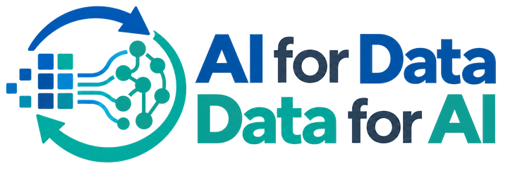

Part 3 · Answering from a document collection · 1 of 6

The document collection
Thirteen World Bank economic updates
Kenya Economic Update7 editions, December 2022 to July 2026
Uganda Economic Update6 editions, June 2023 to June 2026
13 reports · 0 pages
Prepared once
Pages become passages in a store
Uganda, December 2025 · page 12
0
passages with their vectors
For each question
The search finds the closest passages
Question
The same embedding model
question → vector
Closest passages
Positions drawn for illustration. The search compares vectors of 384 numbers.
For each question
The prompt and the answer
Prompt
Instructions
You are a research assistant for development data. Answer only from the supplied passages. After each figure, cite the passage in the square-bracket form given. If the passages do not contain what is needed, say so.
Passages
[ueu-2025-12 · p. 12]Uganda’s economic growth remained above 6 percent in FY25 …
[ueu-2023-06 · p. 40]2.1 Uganda’s economic outlook has greatly improved …
[ueu-2025-09 · p. 21]Uganda’s economic growth remains strong …
Question
How much did Uganda’s economy grow in FY25?
Language modelwrites the answer
Economic updates assistant
For each question
The citation leads to the page
Economic updates assistant
How much did Uganda’s economy grow in FY25?
Uganda’s real GDP grew by 6.3 percent in FY25, up from 6.1 percent in FY24 [ueu-2025-12 · p. 12]. …
Uganda Economic Update, December 2025 · page 12
Building an AI application that answers from data
AI for Data – Data for AI · Implementation
Next in the seriesAnswering from a document collection